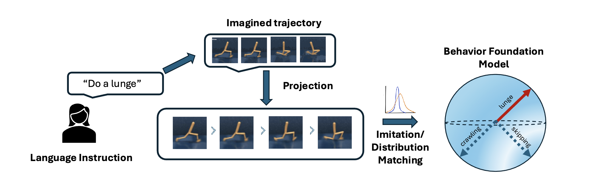

The Path to Generalist Agents passes through Behavior Foundation Models
A long-standing dream for any AI researcher is to be surrounded by autonomous agents that can reliably help with everyday life and work. These systems should handle a wide range of tasks—from cooking, cleaning, and dishwashing at home to driving, coding, coordinating plans, and maintaining schedules—while adapting to our preferences and constraints. Either we can have specialized agents for each task, or we can have few agents with the capability to perform a broad range of tasks.
What Are Generalist Agents?
Generalist agents solve a broad range of tasks rather than optimizing for only one narrow objective. The same agent should be able to switch goals and still perform well, instead of requiring retraining for every task. These agents act in interactive environments, where each action changes what the agent sees next. As a result, the tasks are sequential, for example, driving is not just one action but a sequence of actions (and reactions) with a goal of reaching a location. Due to the nature of the environments and tasks, the generalist agents need to possess a concise but accurate understanding of the world, in order to make quick decisions for potentially unseen tasks. A practical requirement is that tasks should be easy to specify. Users should be able to communicate goals in a simple way, without having to engineer complex reward functions or low-level control details for each new task.
Behavior Foundation Models
A behavior foundation model (BFM) can be viewed as a model that maps a policy to its induced behavior in an environment. This is useful because task solving can then be reframed as selecting the right behavior, instead of relearning dynamics from scratch for every new objective.
Successor measures provide an ideal summarization of the policy-induced behavior. Given a policy $\pi$, the successor measure $M^{\pi}$ represents the distribution of the future states encountered by the agent when executing $\pi$ in the environment. $M^{\pi}$ allows rapid policy evaluation for any arbitrary reward function as the expected return can be computed as the inner product of the successor measure and the reward function.
A successor-measure BFM learns the map $\pi \mapsto M^{\pi}$ (or a structured approximation of it), effectively representing a space of behaviors indexed by policies. Often this policy space is parameterized by a latent variable $z$, so we have a map $z \mapsto \pi_z \mapsto M^{\pi_z}$, where the BFM learns to represent the behavior space in terms of the latent variable $z$. Then, for a new task, we search over $z$ to find the desired policy:
There have been several methods for learning successor-measure BFMs[1, 2, 3] which parameterize the successor measures in different ways. For instance, Proto-Successor Measure (PSM)[1] uses a linear decomposition of successor measures as, $M^{\pi} = \sum_{i=1}^d \phi_i w_i + b$, where $\phi_i$ and $b$ are independent of the policy $\pi$ and $w_i$ are policy-specific coefficients. Forward-Backward (FB) representations [2] use a SF-based factorization, $M^{\pi}(s,a,s^+) = \psi(s,a, z)^\top \phi(s^+)$. Other methods which use the same factorization are [3, 4].
For an efficient policy search, these methods often assume a task distribution given by reward functions that are linear in state features, $r_z(s)=\phi(s)^\top z$ where $z$ maps to the corresponding policy for the reward $r_z$. Under this linearized task-space assumption, policy selection reduces to task identification i.e. finding the $z$ that specifies that task. This can have closed-form solutions leading to a zero-shot policy learning for a wide set of task.
Language-based task specifications
Natural language is probably the most intuitive and flexible way for users to specify tasks. It allows us to communicate complex goals, constraints, and preferences in a way that is easy for humans to understand and use. Unfortunately, for a long time, it was difficult to ground language to the low-level control or the low-level task details required for training agents. However, with the rise of large-scale generative models, we have the desired tools to bridge this gap. These large models are aware of the expectations of the user when they specify a task in natural language. This is because they have been trained on large amounts of data that include language descriptions of tasks and their corresponding behaviors (i.e. videos). These models have shown impressive abilities to understand and generate multimodal content from language descriptions. In particular, language-to-video generation models can take a text prompt like "robot picks up red cup" and produce a plausible video sequence showing that behavior. This capability can serve as both a task understanding module and a task specification interface for generalist agents.
There are broadly two approaches to building language-conditioned task models:
- Large pretrained models: Foundation models like CLIP, GPT-4V, or video diffusion models trained on massive internet-scale datasets can provide zero-shot videos for the corresponding language prompts. While simple to use, they do not always produce dynamics-aware or agent-aware videos.
- Finetuned domain-specific models: Starting from a pretrained backbone and finetuning on the relevant domain-specific data (e.g., robot demonstrations or simulation data) can ground language in the specific action space and physics of the target environment. This often yields better task alignment at the cost of requiring domain data.
In either case, the video-language models (VLMs) effectively learn a map from text instructions to expected behaviors.
Putting them together
RLZero [5] is recent work that combines these two to build a generalist agent that is language-promptable i.e. the tasks are provided as language instructions and the agent uses a language-to-video model to generate the corresponding task video, which is then used as a target for a successor-measure BFM to find the policy that best matches that behavior.
- Imagine: A language-to-video model converts natural language instructions into a target video demonstrating the desired behavior.
- Project: The sequences of frames are projected into the agent's known state space i.e. the dataset space.
- Imitate: The Behavior Foundation Model produces a policy that imitates the projected behavior.
Examples
Task:
Cartwheel
Headstand
Agent's policy:
[1] Agarwal, S., Sikchi, H., Stone, P., & Zhang, A. (2025, October). Proto Successor Measure: Representing the Behavior Space of an RL Agent. In International Conference on Machine Learning (ICML).
[2] Touati, A., & Ollivier, Y. (2021). Learning one representation to optimize all rewards. Advances in Neural Information Processing Systems, 34, 13-23..
[3] Park, S., Kreiman, T., & Levine, S. (2024, July). Foundation Policies with Hilbert Representations. In International Conference on Machine Learning (pp. 39737-39761). PMLR.
[4] Zheng, C., Tuyls, J., Peng, J., & Eysenbach, B. Can a MISL Fly? Analysis and Ingredients for Mutual Information Skill Learning. In The Thirteenth International Conference on Learning Representations.
[5] Sikchi, H., Agarwal, S., Jajoo, P., Parajuli, S., Chuck, C., Rudolph, M., ... & Niekum, S. RLZero: Direct Policy Inference from Language Without In-Domain Supervision. In The Thirty-ninth Annual Conference on Neural Information Processing Systems.